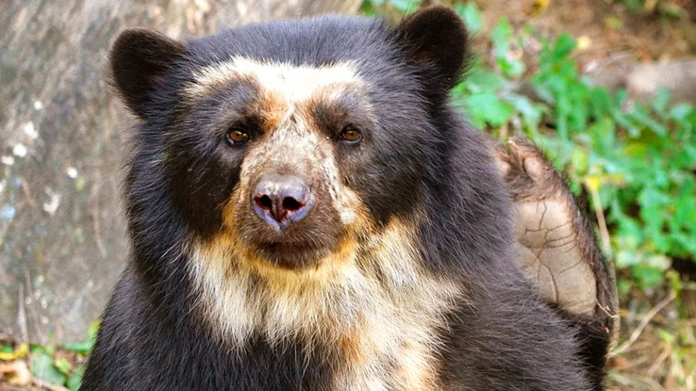

El Oso de Anteojos
El oso de anteojos (Tremarctos ornatus), también conocido como oso andino, es una especie nativa de América del Sur y se encuentra en regiones montañosas de países como Colombia, Ecuador, Perú y Bolivia. Su característica distintiva son los anillos blancos alrededor de sus ojos, de ahí su nombre. A pesar de ser carnívoro, su dieta es variada y se compone principalmente de frutas, bromelias y pequeños animales. Su adaptación a ambientes montañosos y su agilidad en los árboles son notables, y su papel en la dispersión de semillas es crucial para la salud de los ecosistemas en los que vive. Aunque enfrenta amenazas por la pérdida de hábitat y la caza, es un importante ícono de conservación en la región andina.
